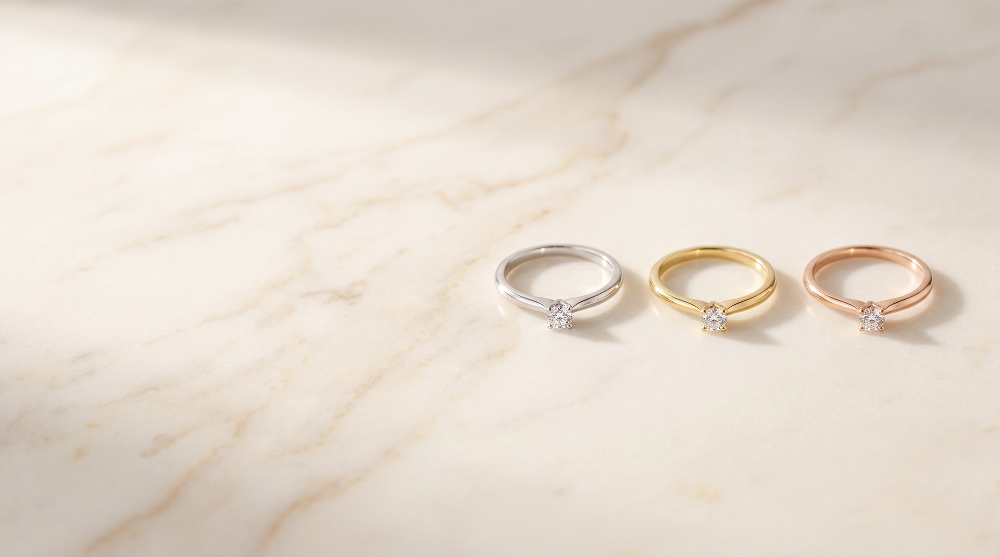

Startseite · Trauring-Konfigurator
Ihr Paar,
Zug um Zug
Legierung, Profil, Breite, Oberfläche, Steinbesatz – Sie stellen Ihre Trauringe hier zusammen und sehen jede Entscheidung sofort am dreidimensionalen Ring. Am Ende nehmen Sie Ihre Konfiguration mit zu uns ins Geschäft.
Trauring-Konfigurator
Ihr Browser zeigt keine 3D-Grafik an. Die Konfiguration und der Preis-Richtwert funktionieren trotzdem – die Zusammenfassung unten können Sie uns direkt schicken.
Paar · Richtwert
Unverbindlicher Richtwert auf Basis von Material, Gewicht und Ausführung. Der verbindliche Preis entsteht im Gespräch bei uns im Geschäft – Tagespreis des Goldes und Ihre Wünsche im Detail entscheiden mit.
Nehmen Sie das mit zu uns
Schicken Sie uns Ihre Zusammenstellung vorab oder bringen Sie sie einfach mit. Wir legen Ihnen die Profile in echt auf den Tisch – anfassen entscheidet am Ende doch mehr als jeder Bildschirm.